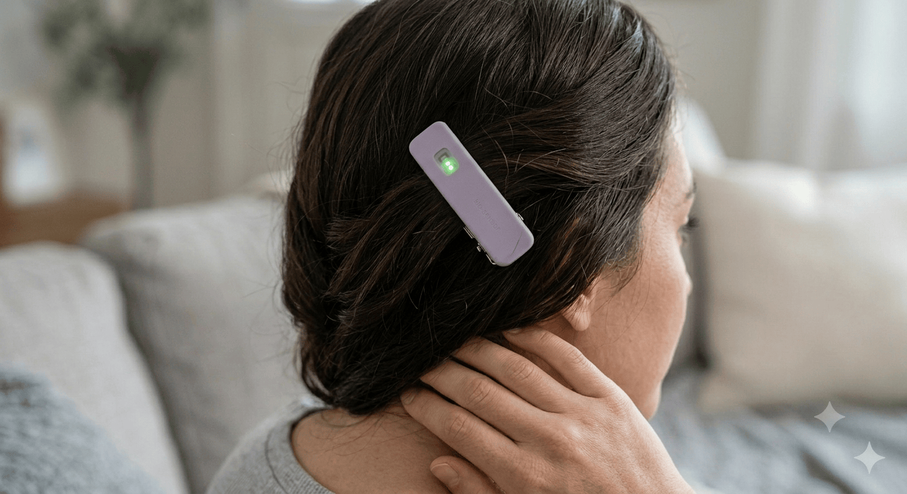
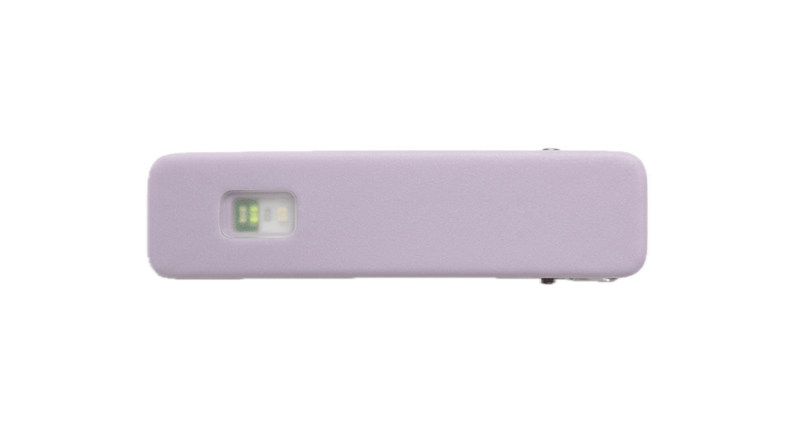
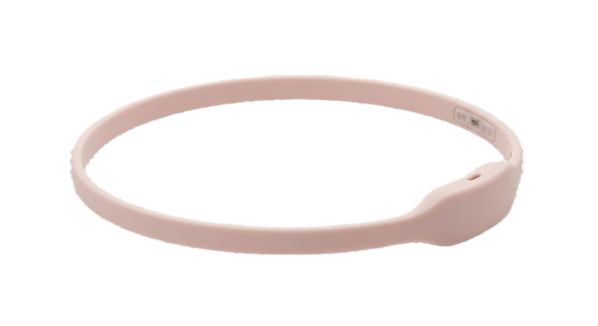
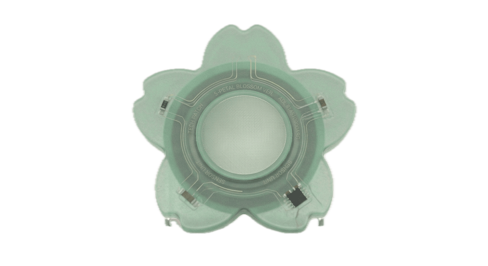
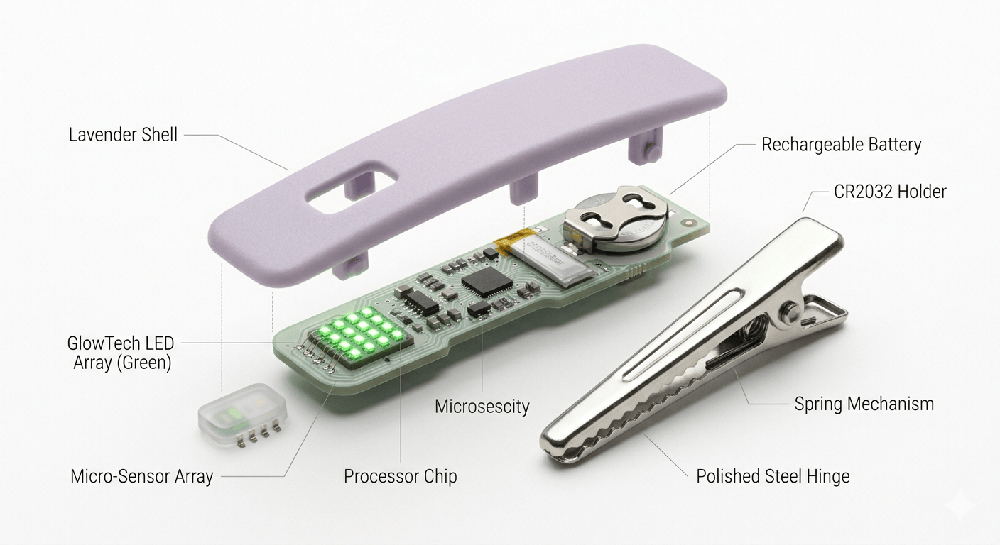

Migraines affect over 1 billion people worldwide. Women are 3.25× more likely to experience them than men — yet most detection tools are reactive, designed around pain that has already begun. Lumi starts from a different premise: your body signals a migraine hours before it arrives. The prodrome phase — marked by subtle shifts in heart rate variability, skin temperature, and cortisol — is a window where early action can prevent or reduce the severity of an attack.
This project began personally. I've had migraines since I was a teenager and always noticed small signs hours before — a stiffness in the neck, an unusual sensitivity to light, a drop in focus that felt different from tiredness. I wanted to build something that could read those signs so I didn't have to consciously track them. Lumi is the result: a wearable biosensor and companion app designed to detect the prodrome window and give you time to act.
Most product design starts in Figma and gets handed off to engineering as a static spec. Lumi started in code. Every screen was built, viewed, adjusted, and rebuilt in the same environment — spacing, color, motion, and copy were tuned by changing CSS and watching the result update immediately, not by translating a mockup after the fact.
Its breathing animation, color states across calm, medium, and warning, and glow intensity were tuned live — dozens of small iterations a static frame can't capture. The orb needed to feel alive without being distracting, which only became clear by watching it pulse in the actual interface.
The progress bar, micro-interactions on each action item, and the success state were designed through interaction, not as separate static screens. Each tap needed to feel responsive — a scale animation, a confirmation label, a progress bar that fills — before the full "all done" state made sense.
An entirely interaction-driven feature that wouldn't exist as a static design — it only makes sense once you can tap two days and see their data compared side by side. This came directly out of asking "what would make this calendar actually useful, not just decorative."
Inspired by a categorized symptom-tracking pattern from one of my earliest app concepts, this feature went through a redesign mid-build. The first version had two separate, overlapping inputs — a tag selector and a symptom picker — that asked the user to categorize the same entry twice. Watching it in the interface made the redundancy obvious, so the tag is now derived automatically from the symptoms selected, cutting the interaction in half without losing any of the structure.
The Lumi app connects to your Aura clip via Bluetooth and translates raw biosensor data into a single, calm signal. No overwhelming dashboards — just a clear picture of where you are and what to do if the signal rises. A categorized symptom log tracks hormonal, lifestyle, aura, and attack symptoms, and surfaces correlations — like how your migraines cluster around specific days of your cycle — so patterns that used to feel random start to make sense.
Most biosensors assume a fixed placement — temple, wrist, earlobe. Migraine pain isn't fixed. Aura clips wherever your pain begins. The sensor reads from that specific location, personalizing detection to your anatomy rather than a population average.
Lumi is designed not to demand attention. The signal orb communicates status without numbers unless you look closely. Alerts are gentle, not alarming. The app is something you glance at, not something you monitor — it works in the background so you don't have to.
Women are 3.25× more likely to experience migraines, yet most medical wearable design uses male bodies as the default. Lumi is explicitly built for and around women's health — the cycle tracking, the hormonal trigger mapping, the language and color system all reflect this intent.
Not everyone can wear a hair clip. Aura is the hero form factor — but Halo exists for people with short hair, shaved heads, or sensory sensitivities around clips. Nimbus exists for people who need a fully invisible, skin-contact option. The three devices share the same sensor core. The choice of form factor is never a compromise on capability — it's a recognition that bodies are different and wearable health technology should work for all of them.
Lumi is a design concept — the wearable hardware has not been manufactured yet. The form factors, sensor placement, and material choices are grounded in research into HRV monitoring and EEG sensor placement. I'd be delighted to find engineers, hardware makers, and medical device designers to bring this to life.

Clips wherever your pain begins. Spring-loaded steel hinge, lavender shell, optical HRV sensor and temperature array in a 48mm body.

Soft silicone loop in blush. Sensor node sits at the temple. For those who prefer a hands-free, all-day wearable over a clip.

A flower-shaped mint patch that adheres directly to skin. Peel tab for easy placement, designed for overnight or post-exercise monitoring.

The companion app is fully designed and built as a prototype — all screens, transitions, and interactions — using HTML, CSS, and vanilla JavaScript. The wearable is a design concept backed by research into biosensor hardware. Simulated biosensor data demonstrates the complete interaction model from onboarding to early warning to pattern tracking.